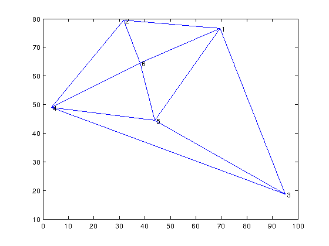

Build2Dmeshinfocpp
Computes the connectivity of the mesh. This function generates the matrix B of ParticleTracking_main function. It is written in c therefore needs to be compiled first. NOTE: THIS FUNCTION WORKS ON TRIANGULAR MESHES ONLY.
Version : 1.0
Author : George Kourakos
email: giorgk@gmail.com
web : http://groundwater.ucdavis.edu/msim
Date 18-Mar-2014
Department of Land Air and Water
University of California Davis
Contents
Usage
B = Build2Dmeshinfocpp(MSH)
VERY IMPORTANT NOTE: The number of rows must be equal to the number of nodes per elements and the number of columns have to be equal to the number of elements of the mesh. Therefore the input argument is usually the transpose of the mesh matrix (see the example below)
Input:
MSH : [Npel x Nel] is the 2D mesh, where Nel is the number of 2D elements and Npel is the number of dof per element
Output:
B : is the element connectivity of the 2D Mesh.
Example
Let's first create a small hypothetical mesh.
p = 100*rand(6,2); MSH = delaunay(p(:,1), p(:,2)) triplot(MSH, p(:,1), p(:,2));
MSH =
1 6 4
3 4 5
3 1 4
2 3 5
4 2 5
 Now we will create the connectivity of the mesh. Note that the input is the transpose of the mesh generated by the delaunay function
B = Build2Dmeshinfocpp(MSH')
B =
0 3 0 0 0
0 5 1 2 4
3 4 2 5 2
The j column of B has the indices of the mesh elements connected with the j element in MSH. The first row of B shows which element is connected to the first side element j, e.g the side MSH(j,1) - MSH(j,2) nodes. The second row shows which element is connected to the second side of the j element MSH(j, 2) - MSH(j,,3) and so on so forth. When the index is zero, there is no element conected to that side.